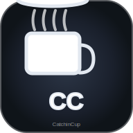

CATCHINCUP™

Logo #5 - Typographie Moderne
⚠️ ACTION CRITIQUE REQUISE:
Safari garde l'ancienne version en cache PWA.
Il faut DÉSINSTALLER la PWA existante !
PROCÉDURE GARANTIE pour Safari Desktop:
1. Clique "Désinstaller PWA" ci-dessous
2. Ferme complètement Safari
3. Vide cache: Develop > Empty Caches
4. Redémarre Safari
5. Recharge: https://catchincup-pwa.vercel.app
6. Réinstalle la PWA si souhaité
✅ RÉSULTAT ATTENDU:
Logo #5 typographie moderne partout
CC monogram dans header
Design premium épuré unifié